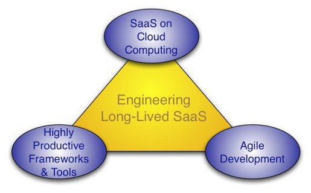

Homepage
Schedule
- Starts: 02/2012
Instructor
- Armando Fox is an Adjunct Associate Professor at UC Berkeley and a co-founder of the Berkeley AMP Lab. During his previous time at Stanford, he received teaching and mentoring awards from the Associated Students of Stanford University, the Society of Women Engineers, and Tau Beta Pi Engineering Honor Society. He was named one of the "Scientific American 50" in 2003 and is the recipient of an NSF CAREER award and the Gilbreth Lectureship of the National Academy of Engineering. In previous lives he helped design the Intel Pentium Pro microprocessor and founded a successful startup to commercialize his UC Berkeley dissertation research on mobile computing. He received his other degrees in electrical engineering and computer science from MIT and the University of Illinois and is an ACM Distinguished Member.
- David Patterson is the Pardee Professor of Computer Science at UC Berkeley and is currently Director of the Parallel Computing Lab. In the past, he served as Chair of Berkeley's CS Division, Chair of the CRA, and President of the ACM. His best-known research projects are Reduced Instruction Set Computers (RISC), Redundant Arrays of Inexpensive Disks (RAID), and Network of Workstations (NOW). This research led to many papers, 5 books, and about 30 of honors, including election to the National Academy of Engineering, the National Academy of Sciences, the Silicon Valley Engineering Hall of Fame, and Fellow of the Computer History Museum. His teaching awards include the Distinguished Teaching Award (UC Berkeley), the Karlstrom Outstanding Educator Award (ACM), the Mulligan Education Medal (IEEE), and the Undergraduate Teaching Award (IEEE). He received all his degrees from UCLA.
Description
This course teaches the engineering fundamentals for long-lived software using the highly-productive Agile development method for Software as a Service (SaaS) using Ruby on Rails. Agile developers continuously refine and refactor a working but incomplete prototype until the customer is happy with result, with the customer offering continuous feedback. Agile emphasizes user stories to validate customer requirements; test-driven development to reduce mistakes; biweekly iterations of new software releases; and velocity to measure progress. We will introduce all these elements of the Agile development cycle, and go through one iteration by adding features to a simple app and deploying it on the cloud using tools like Github, Cucumber, RSpec, RCov, Pivotal Tracker, and Heroku.
Requires
- proficiency in an object-oriented programming language (Java, C#, C++, Python, or Ruby)
- Unix command-line skills are helpful
- a computer running Windows, Mac OS, Linux, or Solaris
- x86 or AMD64/Intel64 hardware on which you can install and run VirtualBox virtual machine
Bibliography
- "Engineering Long-Lasting Software: An Agile Approach Using SaaS and Cloud Computing,"